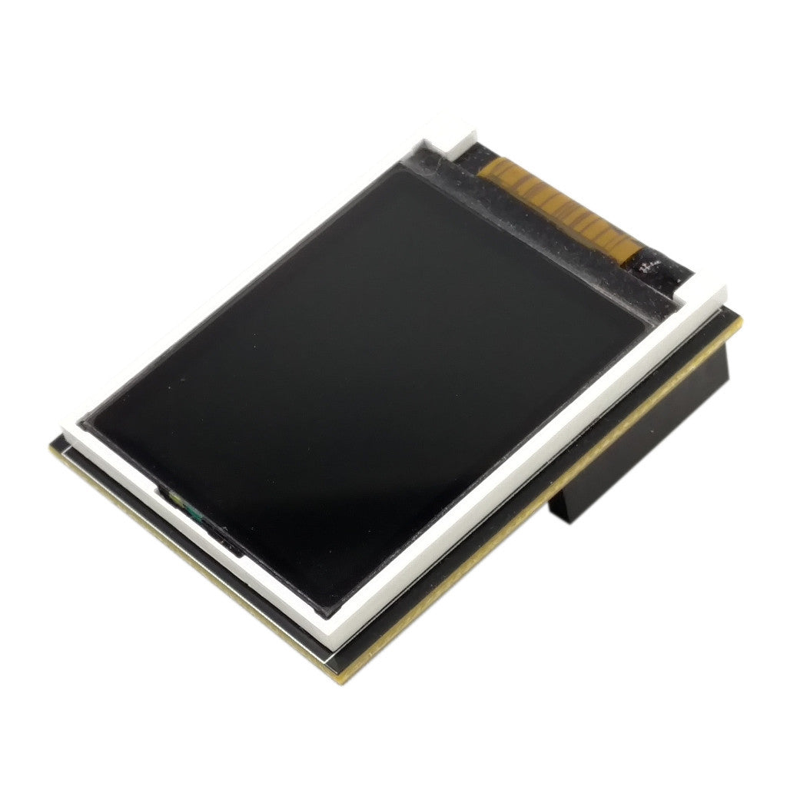
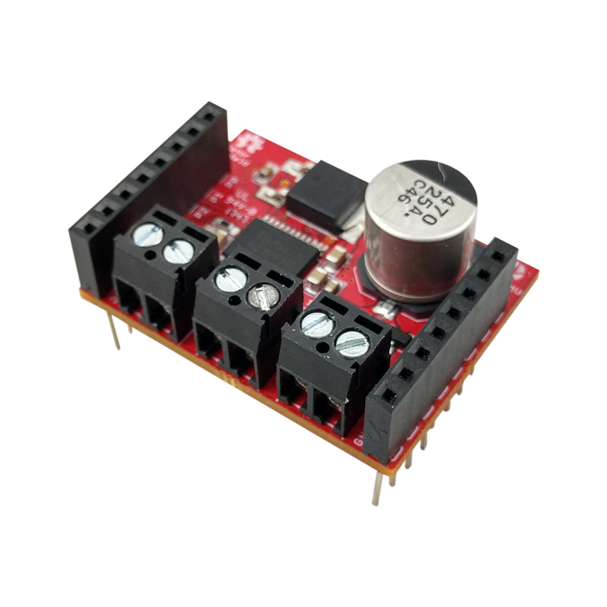
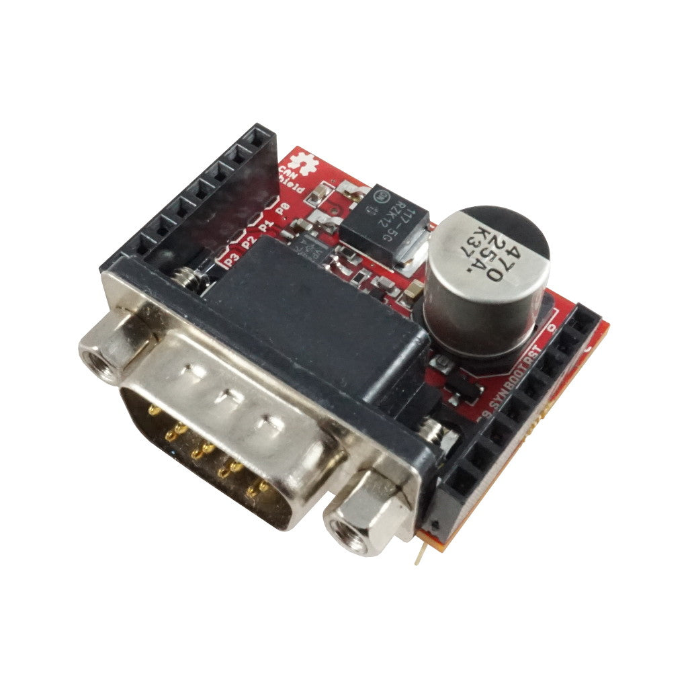

OpenMV 扩展板¶
可插入 OpenMV Cam 的附加板，为其扩展网络、电机控制、显示屏、传感器等功能。每个页面都介绍了该扩展板的功能、关键规格，以及从 MicroPython 驱动它的 API。
现代扩展板¶

千兆 PoE 扩展板
千兆以太网搭配 PoE，实现更高带宽视频流。
探索 →
舵机扩展板
可驱动最多 4 个舵机（最大 5A），同时为摄像头供电，输入 6–36V。
探索 →
电池扩展板
通过 DC 筒形插孔支持 1.8–5.5V 电池输入，另有 6–36V 宽压输入。
探索 →
触控 LCD 扩展板
2.3 英寸 320×240 SPI LCD，支持电容式多点触控和 Qwiic 接口。
探索 →
PoE 扩展板
10/100 以太网，支持以太网供电。
探索 →
PIR 扩展板
6µA 待机运动触发，配备白光和 850 nm 红外照明。
探索 →
CAN/RS232 扩展板
8 Mb/s CAN-FD 和 1 Mb/s RS-232，适用于车载和传统串口。
探索 →
RS422/RS485 扩展板
10 Mb/s 差分串行，适用于长距离工业总线。
探索 →
驱动扩展板
双路 3A 电机驱动或四路 1.5A 线路驱动，6–36V。
探索 →
继电器扩展板
双路 60W 继电器，用于交直流负载切换，输入 6–36V。
探索 →AE3 配件¶

旧版扩展板¶

LCD 扩展板
1.8 英寸 128×160 SPI TFT，用于独立预览。
探索 →
WiFi 扩展板
为无板载网络的 OpenMV Cam 提供 2.4 GHz Wi-Fi。
探索 →
原型扩展板
10×10 通孔原型区，配有 3.3V 和 GND 电源轨。
探索 →
电机扩展板
TB6612FNG 双通道 H 桥驱动，内置 5V 稳压器，支持电池供电。
探索 →
云台扩展板
三路舵机通道，内置 5V 稳压器为摄像头和舵机供电。
探索 →
TV 扩展板
通过 VS23S010 SPI 转 NTSC 芯片输出 352×240 NTSC 模拟视频。
探索 →
无线 TV 扩展板
NTSC 视频输出，板载 5.8 GHz 模拟 FPV 发射器。
探索 →
QWIIC 扩展板
两个 Qwiic JST-SH 接口，用于菊花链 I2C 外设。
探索 →
补光扩展板
九颗高功率白光 LED，配备 TPS61169 驱动和 DAC/PWM 调光。
探索 →
舵机扩展板
通过 I2C 控制的八通道 PCA9685 舵机/PWM 控制器。
探索 →
CAN 扩展板
1 Mb/s CAN 总线，配备 DB9 接口和 12V 稳压器。
探索 →
热电堆扩展板
16×4 热传感器阵列，提供逐像素温度。
探索 →